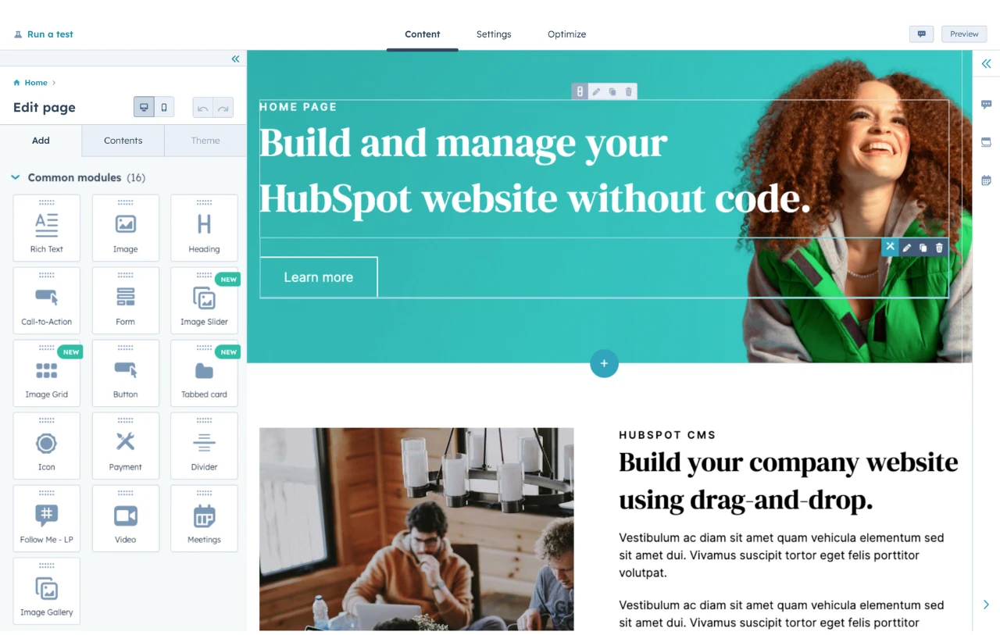

| Thombare Raghunath |
|---|
Updated: March 19, 2024
Published: May 09, 2022
| |
|
|  |
HubSpot's Free Website BuilderCreate and customize your own business website with an easy drag-and-drop website builder.
|
HTML, which stands for Hypertext Markup Language, is the primary language of the World Wide Web. An HTML document sets the content and structure of a web page. When you view a page in your browser, what you’re looking at is your browser’s interpretation of an HTML file that was retrieved from a web server.
HTML is almost always used in conjunction with two other front-end languages: CSS and JavaScript. CSS (Cascading Style Sheets) is a language that controls the styling of a web page, including colors, fonts, and layouts. JavaScript is a programming language that enables more complex client-side features like interactive elements and animations.
The most recent numbered release of HTML is HTML5. Released in 2008, HTML5 notably contained several improvements to handle multimedia content like audio and video and semantically rich elements to describe page structure.
Going forward, there will be no more numbered version numbers for HTML. That means there will be no HTML6, and HTML5 is now called “HTML.” However, a number of improvements and enhancements have been released since HTML5 came out in 2008.
If you want to know more about HTML and how to write it, I recommend starting with our ultimate guide to HTML. You’ll learn everything you need to know to understand this post in its entirety.
Because every website is written in HTML, regardless of the complexity of the site or the number of technologies involved, it’s a good idea to immerse yourself in it. And yes, this is true even if the website uses server-side languages like PHP (such as WordPress). With a tool like WordPress, the web server will process the PHP and query the site's database to generate the finished HTML document to deliver to visitors' browsers.
You can take any page and lift up the hood to see the HTML, CSS, and JavaScript code that bring it to life.
Later in this post, I’ll review some of the ways designers and developers harness HTML in their creative works.
50 Free Coding TemplatesFree code snippet templates for HTML, CSS, and JavaScript -- Plus access to GitHub.
|
To get comfortable with HTML (along with CSS and JavaScript), I think it’s a good idea for you to create a website or two from scratch.
Even building a relatively simple HTML website can help you learn how HTML works and provide you with a solid foundation before you move on to more advanced projects.
Here are some ideas for beginner-friendly simple HTML projects you can create:
As you grow more comfortable with HTML basics, you can begin to branch out into bolder, more unique design choices. But still, even elaborate websites can often be boiled down to a handful of HTML features working together to make a cohesive experience.
Creating an HTML site doesn't have to be complex — and by taking a look at some HTML page examples, you can see that for yourself.
Here's an HTML page example I love that demonstrates getting started isn't as tricky as you think it will be.
HubSpot's Free Website BuilderCreate and customize your own business website with an easy drag-and-drop website builder.
|